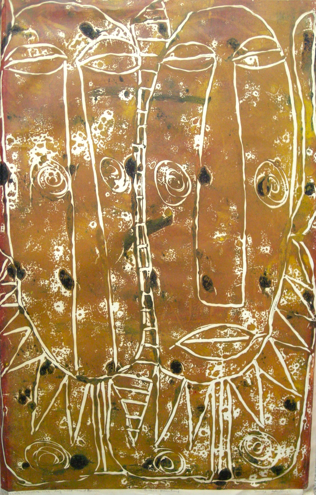

James Adedayo
b.1941
Artist Biography
James Ishola Adedayo was born on 1st January 1941 in Ila-Orangun, Nigeria. He gained his artistic training at the Oshogbo art workshops 1966-68 and then at Ori-Olukun Cultural Centre at the University of Ife 1969-1972. There Adedayo studied experimental printing techniques including metal embossing, etching and wax plus batik. Notable exhibitions included solo shows in 1972 at the Ori-Olukun Cultural Centre in Ife Ife and in Nairobi, Kenya, in 1973 in Budapest, Hungary and in 1977 at USIS in Lagos. A Sydney University show, also in 1977, featured 97 works of art and live singing, miming and dancing by Adedayo acting out the paintings’ themes. Major group shows in the 1970s included Kaduna, Ibadan and Lagos in Nigeria, and in 1974 at the Maxwell Art Centre in London and the Crocker Art Gallery in Sacramento, California, USA. His work was also in group exhibitions at the French Cultural Centres in Lome, Togo in 1988 and Cotonou, Benin in 1989 and in Atlanta, Georgia in 1988. Adedayo went on to found the Oshogbo Afro Art and Research centre in Oshun State, to foster collaboration and research amongst local artists. His work is in many permanent public collections in Nigeria and is also at the University of Ghana in Legon, Ghana, the Iwalewa-Haus, Bayreuth in Germany and Spelan College, Atlanta, Georgia in the United States. Adedayo’s work forms part of the Robin Williams collection and as such was part of a travelling Oshogbo art exhibition in the United States, most recently at the Waldron Arts Center, Indianapolis in 2024.

Oba Oguola & Ewuare who dug moat round Benin